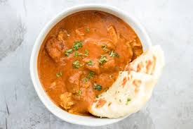

Butter Chicken

Description
Butter Chicken, or Murgh Makhani, is one of the most popular Indian dishes globally. It features succulent grilled chicken simmered in a smooth, silky tomato and butter-based gravy. The dish is known for its mild, creamy profile and a hint of sweetness balanced by the smokiness of the tandoori-style chicken.
Ingredients
- 500g Chicken breast or thighs, bite-sized
- 1 cup Tomato puree
- 1/2 cup Heavy cream
- 2 tbsp Butter (unsalted)
- 1 tbsp Ginger-garlic paste
- 1 tsp Kashmiri Red Chili powder
- 1 tsp Garam Masala
- 1 tsp Dried Fenugreek leaves (Kasuri Methi)
- Sugar or honey to taste
Steps
- Marinate the chicken pieces with ginger-garlic paste, yogurt, and spices for at least 30 minutes.
- Pan-sear or grill the chicken until it is charred and cooked through, then set aside.
- In a pan, melt the butter and add the tomato puree, simmering until it thickens.
- Stir in the heavy cream and spices, maintaining a low heat to prevent the cream from curdling.
- Add the cooked chicken pieces into the gravy and simmer for 5-10 minutes.
- Crush the dried fenugreek leaves between your palms and sprinkle them over the dish before serving with naan or rice.
Home